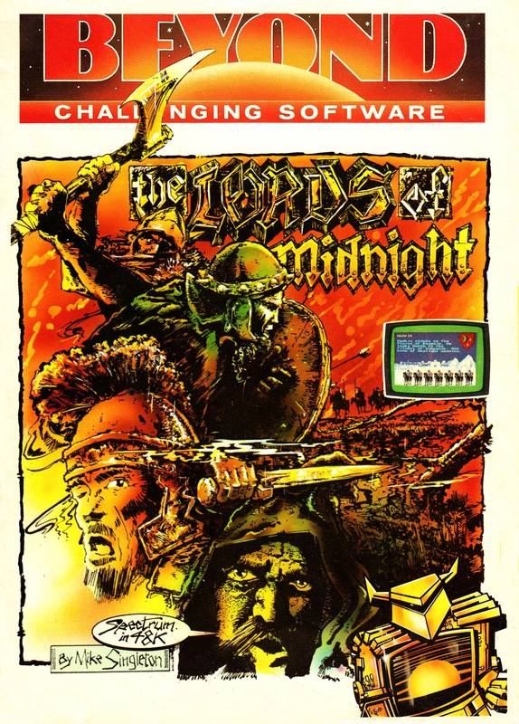
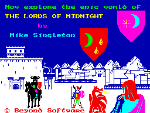
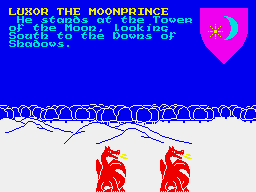
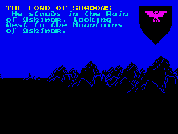
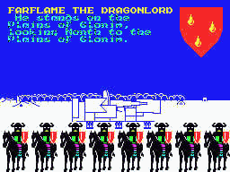
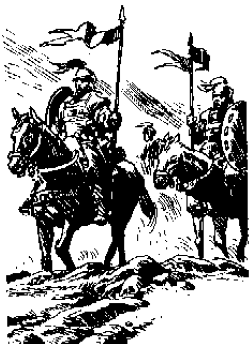

Lords of Midnight


{kind=link}

| Publisher: | Beyond |
| Price: | £9.95 |
| Year: | 1984 |
| Source: | CRASH, Issue 7 |

Beyond have produced a game of immense complexity that transcends the simple word-matching of the mainstream adventure and in many respects more resembles a strategy war game. Many features of the game are new or are developed to an elaborate degree setting new high standards in Spectrum software.
The cassette is accompanied by a lavish booklet giving thorough and very sound playing instructions. When I say you will need them, and you most certainly will need to read some of the hints given, I mean this as a compliment to the inventive depth which pervades the whole project.

There is an original reward for the first adventurer to finish off Doomdark, your evil adversary. The prize has the winner cast in the role of fantasy fiction writer as he will become the co-author of a novel based upon the scenes of his unique version of the War of the Solstice. Thus you will have had a hand in creating the first ever computer-generated novel. Had I heard of this idea from a third party I would’ve immediately dismissed it as half baked folly but having seen the game I should like to be first in line to receive a copy.
A look at the overlay card for the keyboard might show some ways this game differs from the others. Instead of the adventure-style input, here you have a set of keywords. LOOK gives a vista with details of where a character stands. The heraldic shield at the top right tells you through whose eyes you are looking. You can turn a character to look in another direction by pressing the appropriate direction key. THINK gives more details regarding the character and any army he controls is numbered and described. CHOOSE can lead to searching, hiding, attacking an enemy and repairing defences but the options will shrink or expand with different characters and circumstances; a cowardly character will seldom volunteer for daring deeds. SELECT gives you a list and allows access to the characters under your control. At the beginning of the game you only control four characters but can employ many more once you have visited the various citadels and keeps scattered about the land.
Although this game is so complex it is difficult to review in the few days available there is one feature which impresses on the very first frame of the game. The graphics which show your journey through the land of Midnight are little short of stunning. The panoramic views are drawn in full perspective and consecutive moves see mountains, forests, hills, citadels, towers and fortresses rising in stature as you approach or fade to distant outlines as you leave. The screen as a whole is very well presented as if designed by a graphic artist. There is no crude split on the main screen but instead a pleasing mixture of superb views of the scene, tastefully redefined characters for the text, a heraldic shield depicting the crest under which your character fights, and highly decorative and detailed representations of the numbers and type of foe you might come across. These last are the best I’ve seen on the Spectrum.

Possibly the most pleasing aspect of the Lords of Midnight is its wonderfully coherent storyline.
Doomdark has woken from his slumber and the lands of Midnight are plunged into Winter. This Solstice is the peak of the Witch king’s power and it is now that you must defeat him. The computer plays the role of Doomdark and intelligently pits the evil forces against you. A cold blast of fear emanates from the Citadel of Ushgarak, blowing across the Plains of Despair ever southwards to where you are busy marshalling troops. Victory for Doomdark is eliminating Luxor the Moonprince and Morkin, his son. Alternatively he can creep south into the peaceful land of the Free, striking at its figurehead of serenity and happiness — the Citadel of Xajorkith.
If thinking of yourself pitted against the computer fills you with despair don’t worry, you have your friends and your own wits. You take the role of Luxor the Moonprince, Lord of the Free and your first task is to travel abroad and gain the support of the other citadels and keeps throughout the land of Midnight and amass an army. As Luxor you have the Power of Vision and the Power of Command which enable you to control other characters loyal to you, move through the land of Midnight and look through their eyes. The closer a character or army is to Luxor and his Moon Ring the less demoralising is the effect of the Ice Fear that emanates from the Plains of Darkness as the ring radiates the strength and warmth of his mind.

Your most trusted companion, and the most important person in the quest, is your own son Morkin who is half human and half fey. By virtue of his unique ancestry Morkin can withstand the utter coldness of the Ice Fear which is increasingly directed at him as he approaches the Citadel of Ushgarak and so lifts some of the burden upon the armies of the Free.
You initially have control over four characters: Luxor, Morkin, Corleth the Fey and Rothron the Wise but as you progress such characters as the Lord of Shimeral and the Lord of Brith and their armies add support to the forces of the Free.
If I run through a typical game it may show you some of the great features it has and perhaps some tips if you’ve already got a copy.
My tactics, and remember you’ll need them as this is very much a strategy game, involved building up armies at the Citadel of Shimeril guarding the western route into the tranquil south-east and at the Keep of Athoril which overlooks a major route south.

Luxor headed south-east past the cave of shadows, through the Mountains of Ishmalay to the Keep of Brith where the Lord Brith is recruited to the cause. Lord Brith travels north-east to the Citadel of Shimeril while Luxor leaves to the east to recruit Lord Mitharg who in turn heads north to Shimeril. Mitharg picks up an extra 100 warriors on his way at a keep in the Domain of Blood.
Morkin travels east to the Domain of Morakith and finds shelter and refreshment at keeps along the way. In the east he gets quite a shock to see Doomdark’s troops lined up with 890 riders. Morkin finds it difficult to recruit Lords of keeps and citadels, presumably because he is so young, but does manage to persuade the Lord of Whispers a little further along his way.
Corleth headed east to Shimeril ahead of Morkin and seeks and finds the sword Wolfslayer — very handy when you meet wild wolves as well as Skulkin and ice trolls. You can become very blasé about killing these creatures but if you are tired they’ll give you a nasty surprise. Corleath is very invigorated and utterly bold and the Ice Fear is mild. In these early stages all is going well.
Rothron goes north-east but, apart from recruiting the Lord Blood who takes his 1190 riders and 375 warriors south to Shimeril, he plays little further active part in the game and comes to an untimely end at the hands of the Skulkin.

During the night of the third day Doomdark has made his presence felt. The bloody sword of battle brings death in the Domains of Kor and Lorgrim which are unfamiliar to me. I consult the map to find they are in the far north in the vicinity of the Citadel of Ushgarak.
Lord Blood loses 10 in the battle of Blood but picks up 100 warriors in a keep in the Domain of Blood on his way south. He finds Lord Mitharg at a keep unaware he is so near to the Citadel of Shimeril where the Free have decided to meet. Blood takes Mitharg south with him.

The Lords of Shimeril, Brith, Blood and Mitharg are now encamped within the relative safety of the Citadel of Shimeril, overnight losses being small — say 5 to 10 warriors and about the same riders per army a night.
In the later stages of the game Luxor recruits and sends Lord Dawn to the citadel with 1200 warriors and 600 riders, bringing the total warriors in the Citadel of Shimeril up to 3500 and riders to 4000. Later Luxor finds Athoril, with its keep and Lord Athoril and begins to build up forces here, the point I had chosen as the second major bastion of defence and counter attack. The Utarg of Utarg marches his 1000 riders to this second meeting point. However, on his way he is not so committed as to recruit other armies and this is left for Luxor to do.
At the end of the seventh day at nightfall, when looking throughout the eight compass directions, I could see the silhouettes of the towers, citadels and armies that surrounded me, my thoughts turned north to Morkin who I now knew had this very day penetrated deep into the dark Mountains of Ugrorn, into the Tower of Doom and at this very moment was wondering how he might get back with that precious object held tightly within his grasp. He had the Ice Crown.
| Difficulty: | 8 |
| Atmosphere: | 10 |
| Vocabulary: | N/A |
| Debugging: | 10 |
| Overall Value: | 10 |